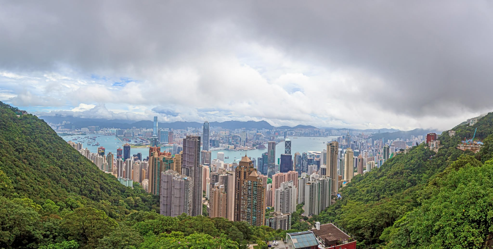

.png)

 Panoramic, scenic, iconic
Panoramic, scenic, iconic
Victoria Peak, or The Peak, is the tallest point on Hong Kong Island at 552 meters
above sea level. It is one of the city’s most popular tourist destinations, attracting
visitors with its breathtaking panoramic views of Hong Kong’s skyline, Victoria Harbour,
and lush surrounding hills. The area is accessible via the historic Peak Tram, a funicular
railway that provides a steep and scenic ride up the mountain. At the top, visitors can
explore Sky Terrace 428, the highest viewing platform in Hong Kong, which offers 360-degree
views perfect for photography. The Peak also features walking trails like the Peak Circle Walk,
dining options with scenic views, and shopping at The Peak Galleria. Its combination of natural
beauty and urban scenery makes it a must-visit attraction for both tourists and locals.
Planning tip: Victoria Peak, take the Peak Tram early in the morning, explore Sky Terrace 428
for panoramic views, walk the Peak Circle Trail, and check the weather for clear visibility.